Vous présente son menu de désserts :
Menu YAOURTS
Au menu yaourt, nous avons :-
Les yaourts au lait :
Un plaisir naturel, frais et crémeux.
-
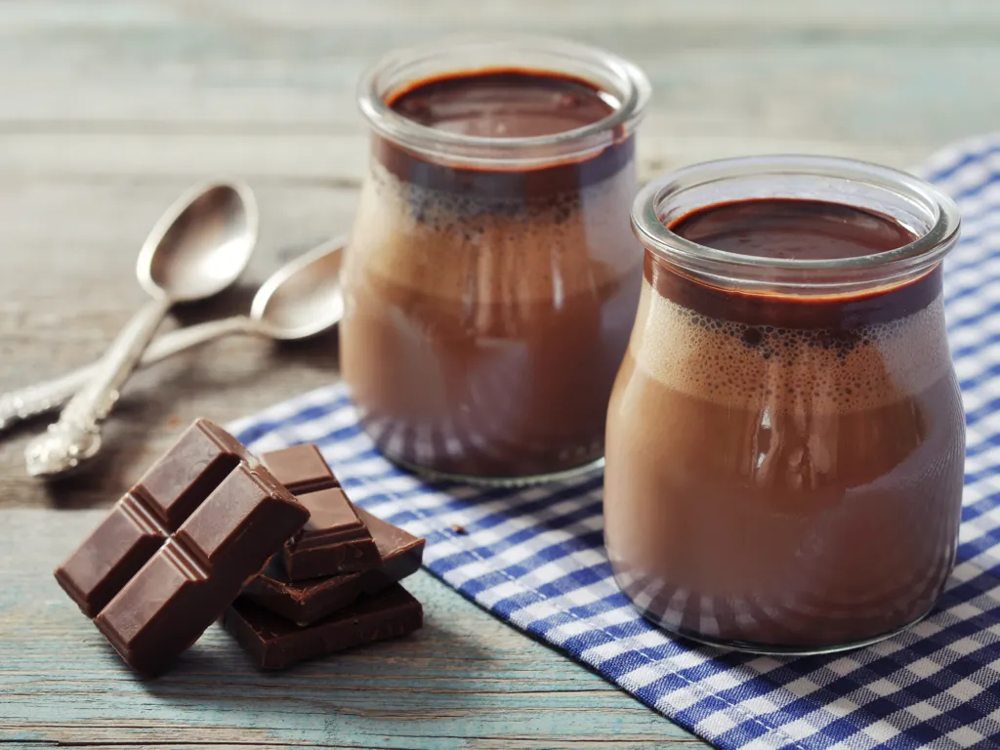Les yaourts au chocolat :
Une touche gourmande de chocolat riche et onctueux.
-
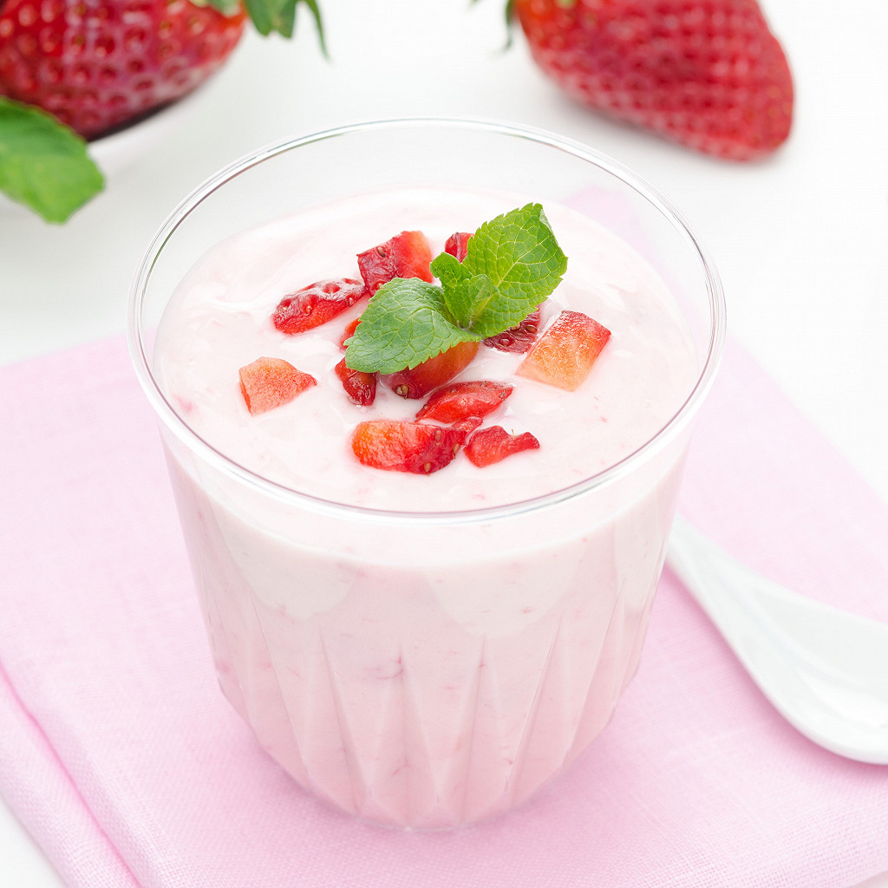Les yaourts à la fraise :
Délicieusement fruités avec de vraies fraises.
-
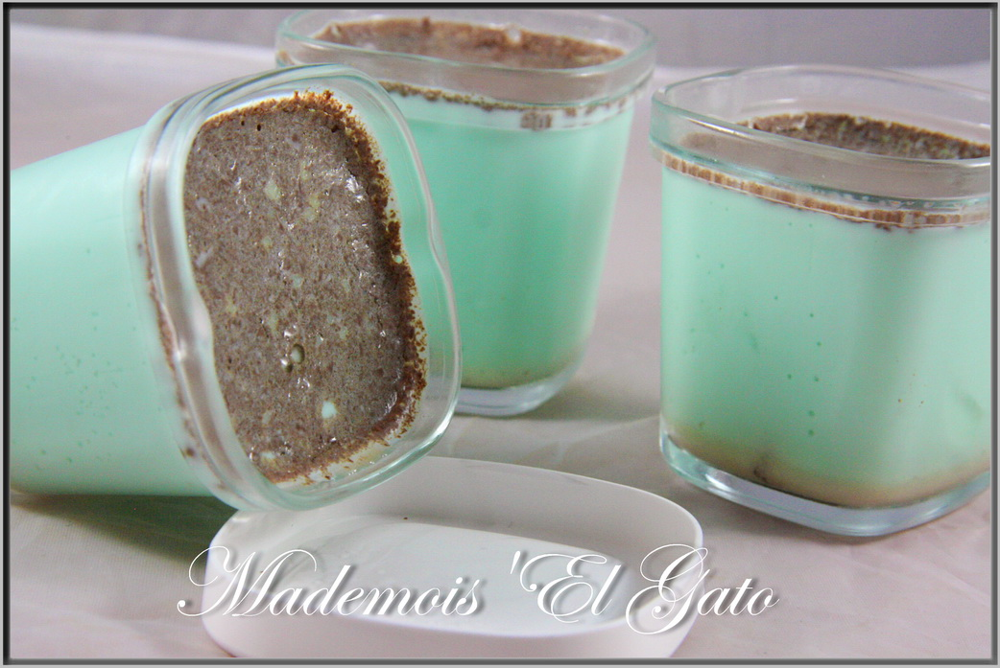Les yaourts à la menthe :
Frais et raffraichissants, parfait pour l'été.
Menu FRIANDS
Au menu friand; nous avons :-
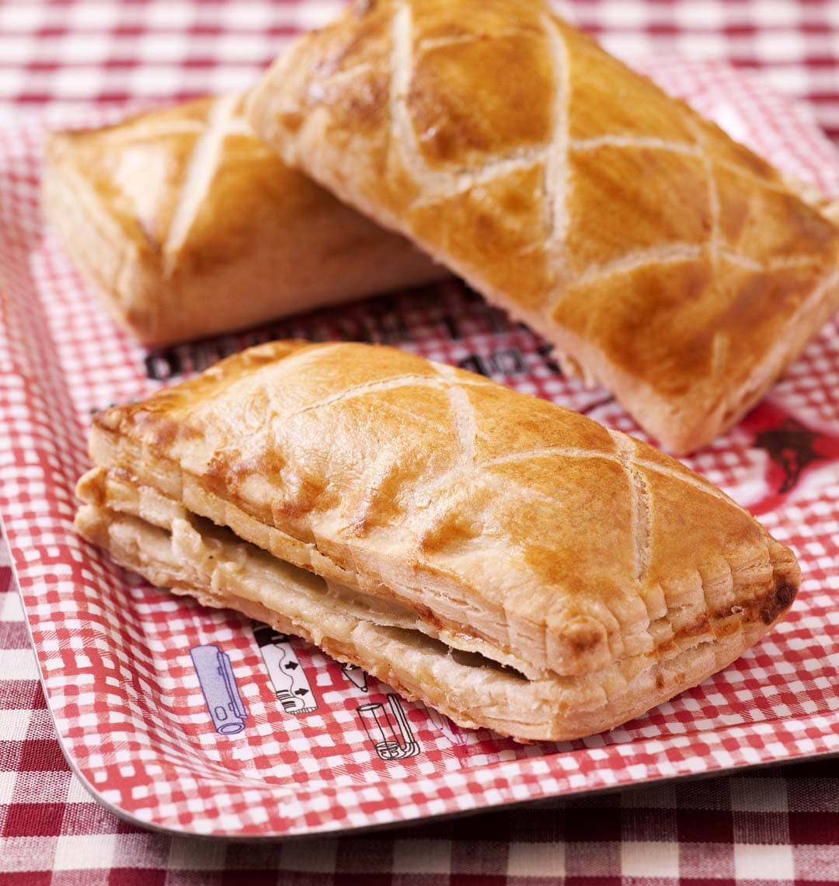Les friands au fromage :
Fondants au fromage, une bouchée de pure indulgence.
-
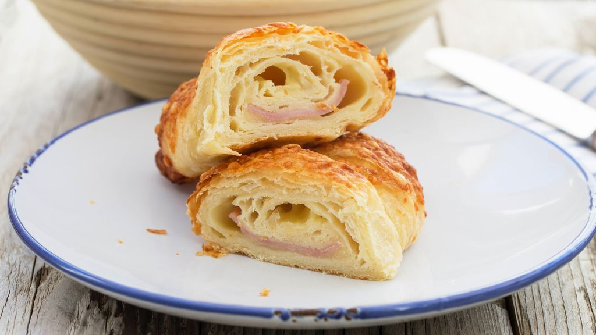Les friands au jambon :
Savoureux et tendre, une combinaison classique.
-
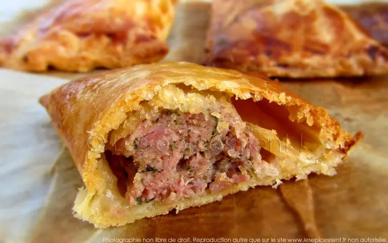Les friands à la viande hachée
Riches et copieux, idéal pour les amateurs de viande.
Menu MADELEINES
Pour ce menu; nous vous proposons juste de moelleuses et légèrement sucrée, une douceur intemporelle.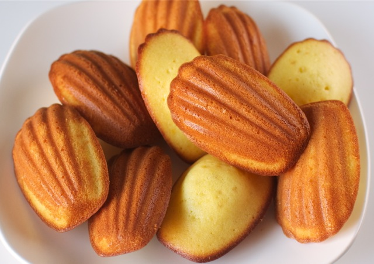
Menu POP-CORN
Les options à ce menu sont:-
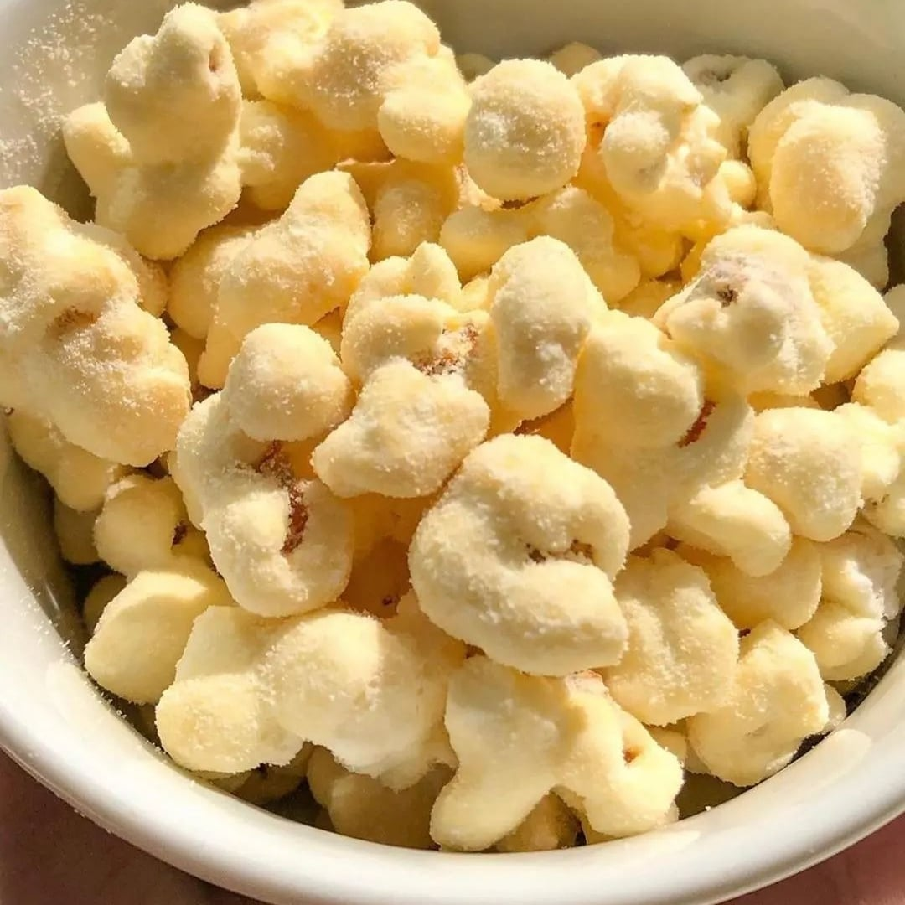Popcorn au lait :
Popcorn saupoudré de lait en poudre, délicieusement crémeux et unique .
-
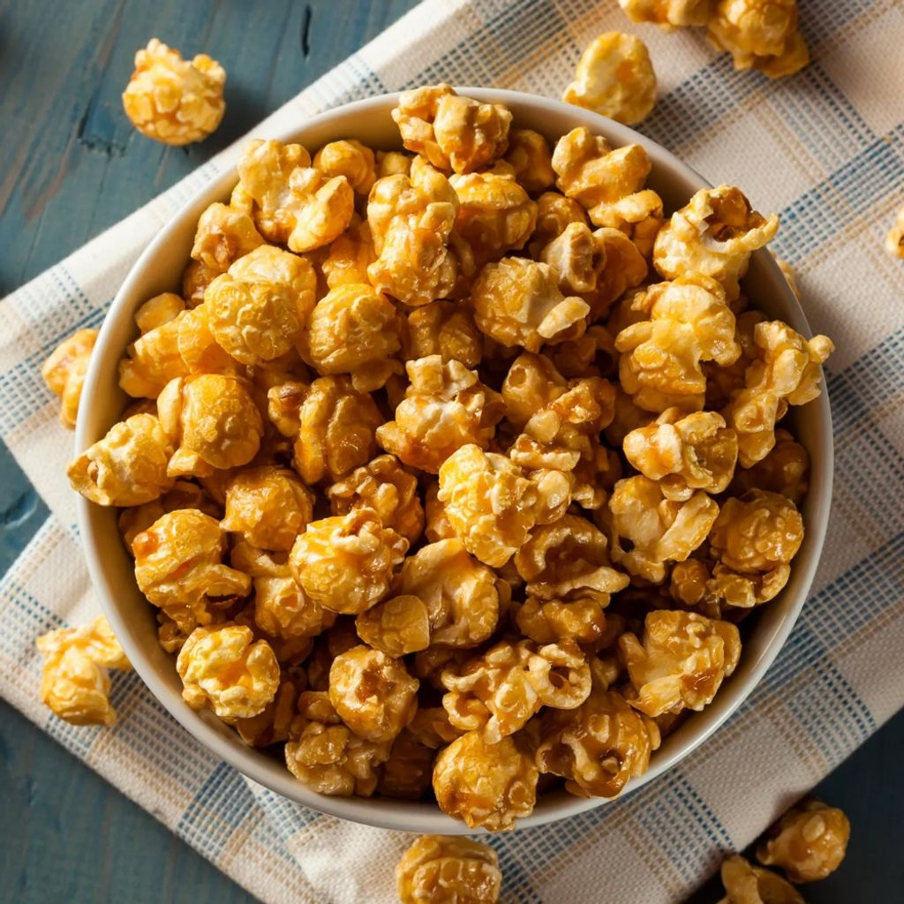Popcorn au caramel :
Popcorn caramélisé, coquant et sucré à souhait .
-
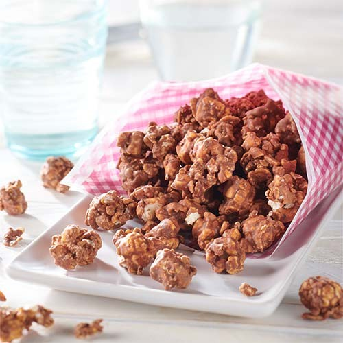Popcorn au chocolat :
Popcorn enrobé de chocolat, une gourmandise irrésistible .
-
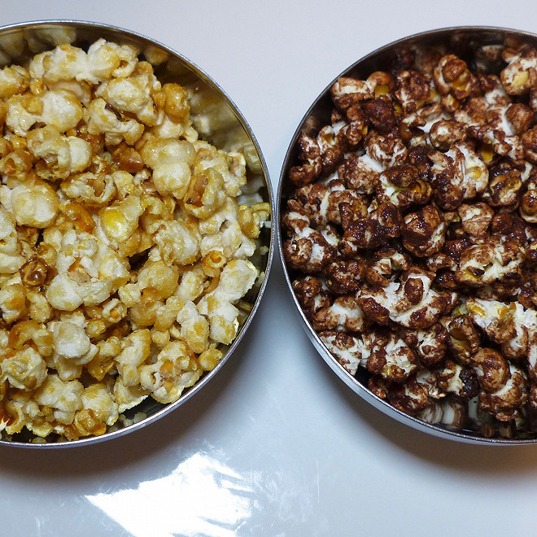Popcorn Mélanche chocolat-caramel :
Le meilleurs des deux mondes: chocolat et caramel.
Menu sandwichs
Généreusement garni de viande hachée, savoureux et satisfaisant; Délices Sucrés vous propose aussi des sandwichs .
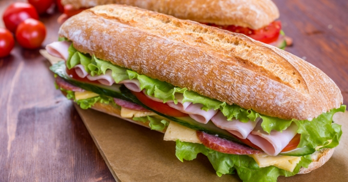.jpg)